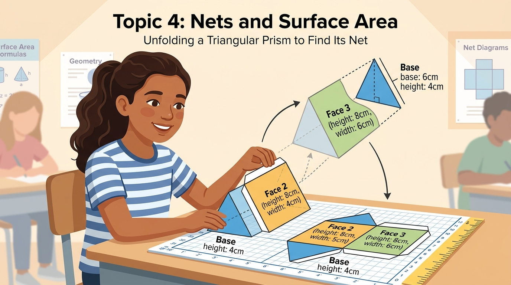
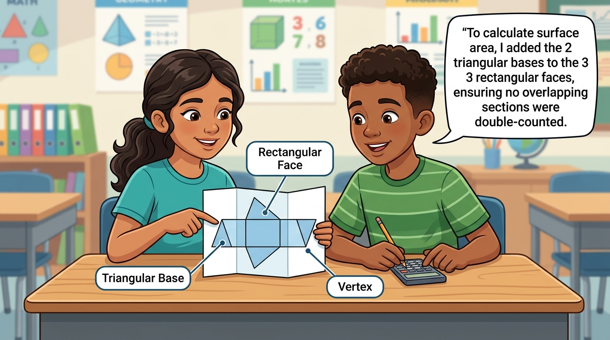

⚡ Real-Time Diagnostic Pulse Engine
Quick 60-second readiness check to surface student misconceptions prior to small-group rotations.
🎯 Today's Learning Objectives
Content and academic language goals tailored for small-group instruction with explicit ESOL scaffolds.
Content Objective
I can find the greatest common factor of two numbers by listing or comparing their factors.

Language Objective
I can explain how I found the GCF using the words factor, common factor, divisible, and greatest common factor.

💡 Small-Group Tri-Rotation Studio
3 concurrent 10-minute rotations designed for deep schema building, peer dialectics, and physical-digital manipulative exploration.
🔄 Lesson Synthesis & 21-Day Spaced Echo
Consolidate small-group observational notes and schedule automated far-transfer challenges to ensure long-term schema retention.
📝 Automated Observational Digest
• 85% of students mastered direct visual representations.
• 2 students scheduled for follow-up intervention on inverse operation vocabulary.
• Observational quick-tags synced to Google Classroom gradebook.
📅 21-Day Spaced Transfer Schedule
Day 14 Echo: Real-world scaling application.
Day 21 Echo: Far-transfer challenge problem.
⭐ Mastery Celebration
Congratulations! You have completed today's Grade 6 Small-Group Math Studio session.